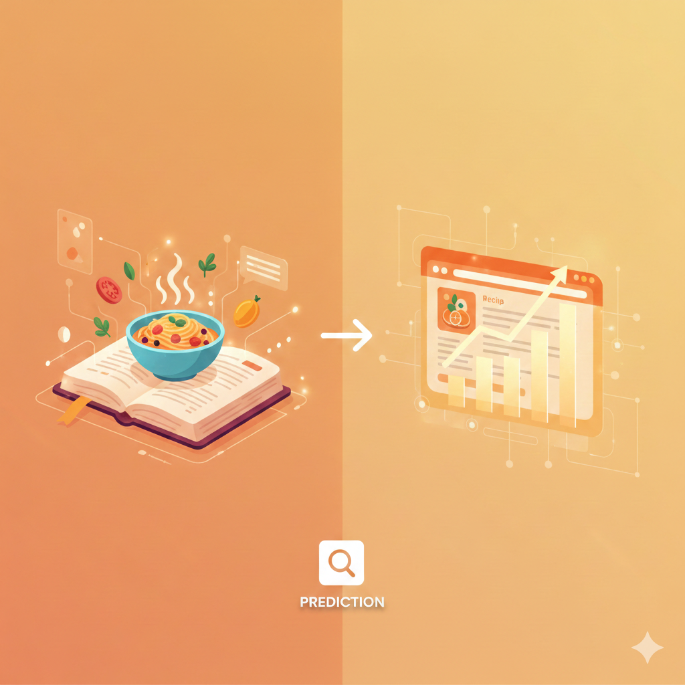
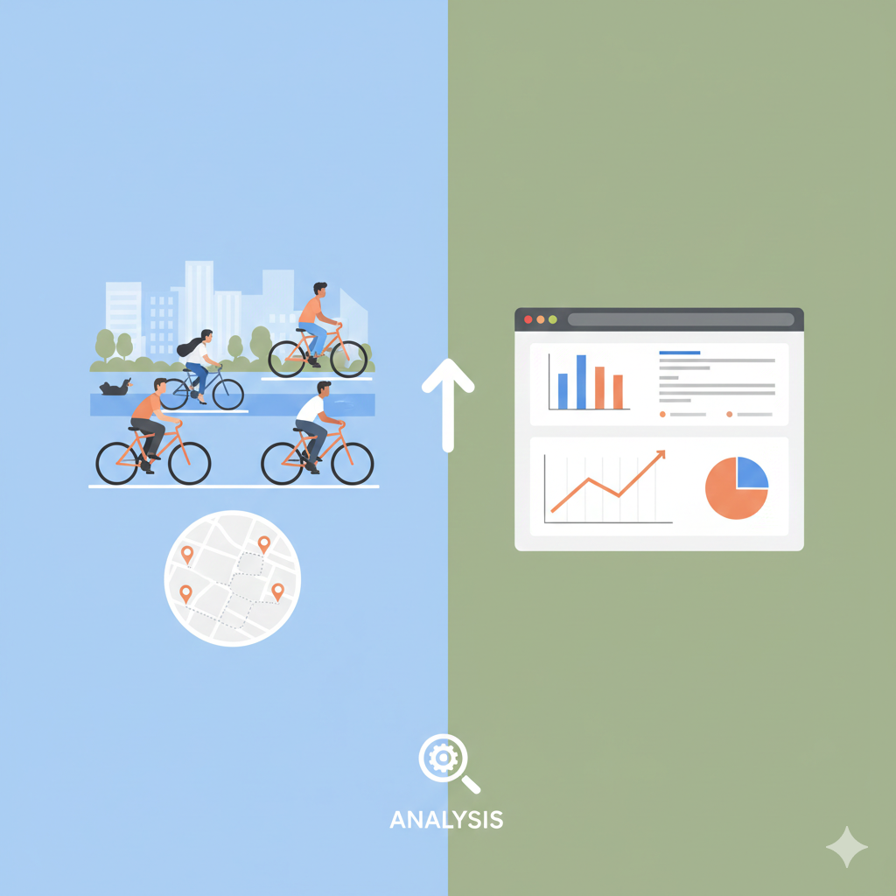
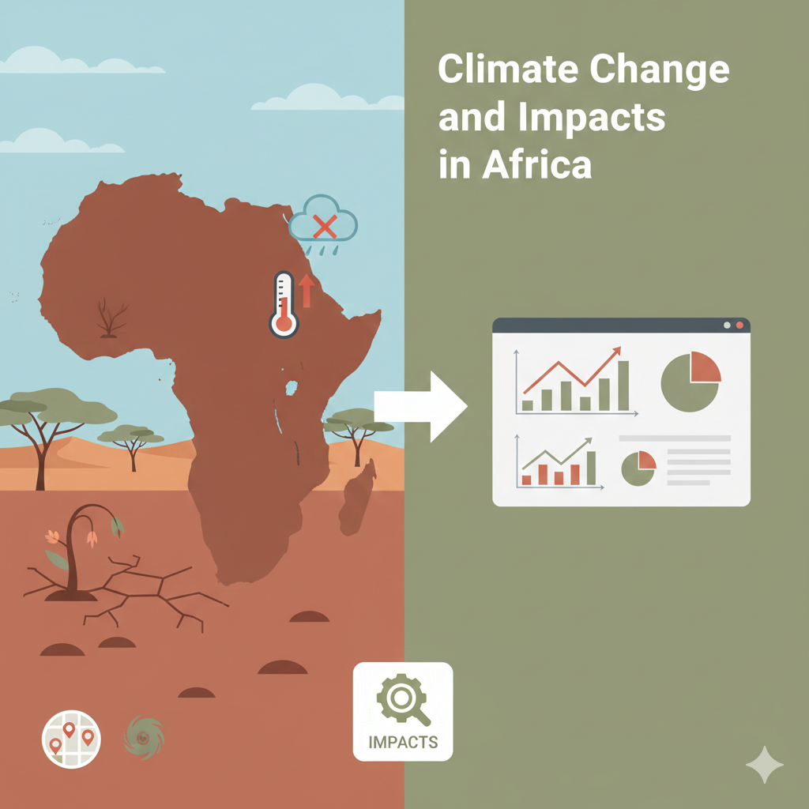
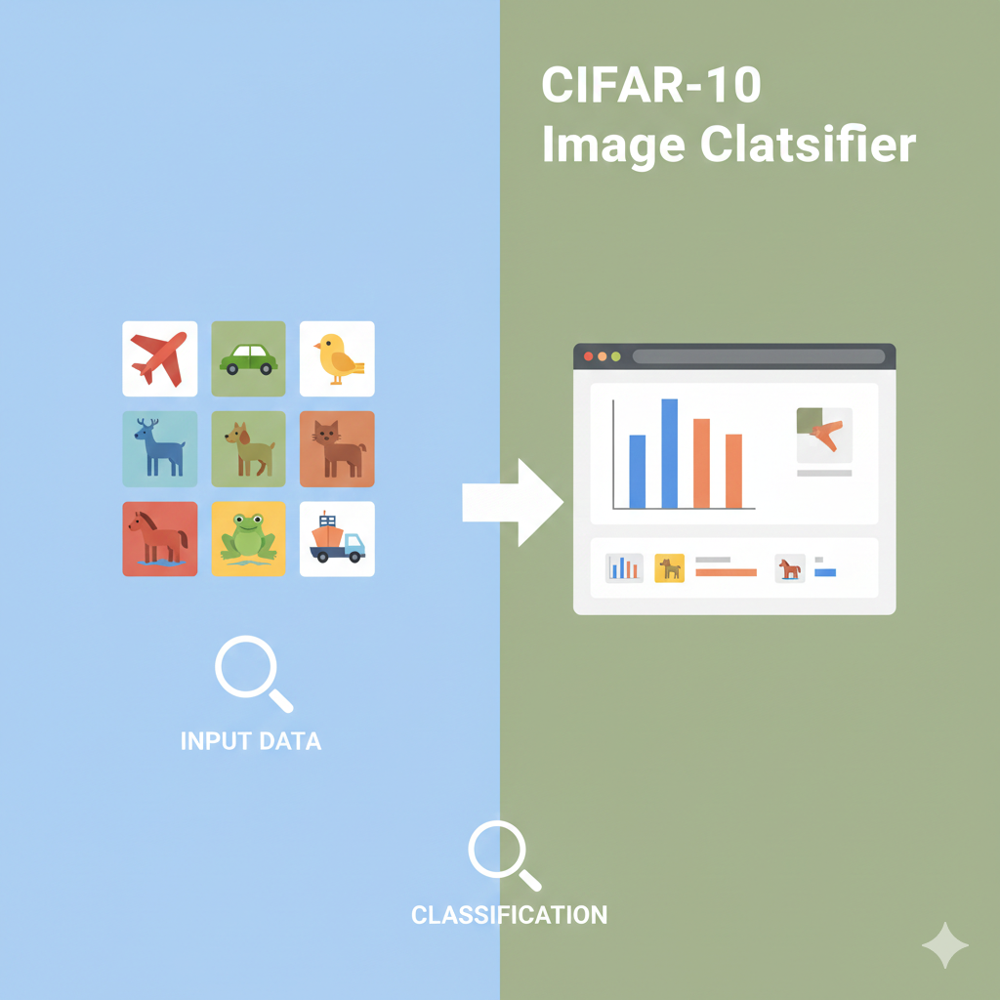
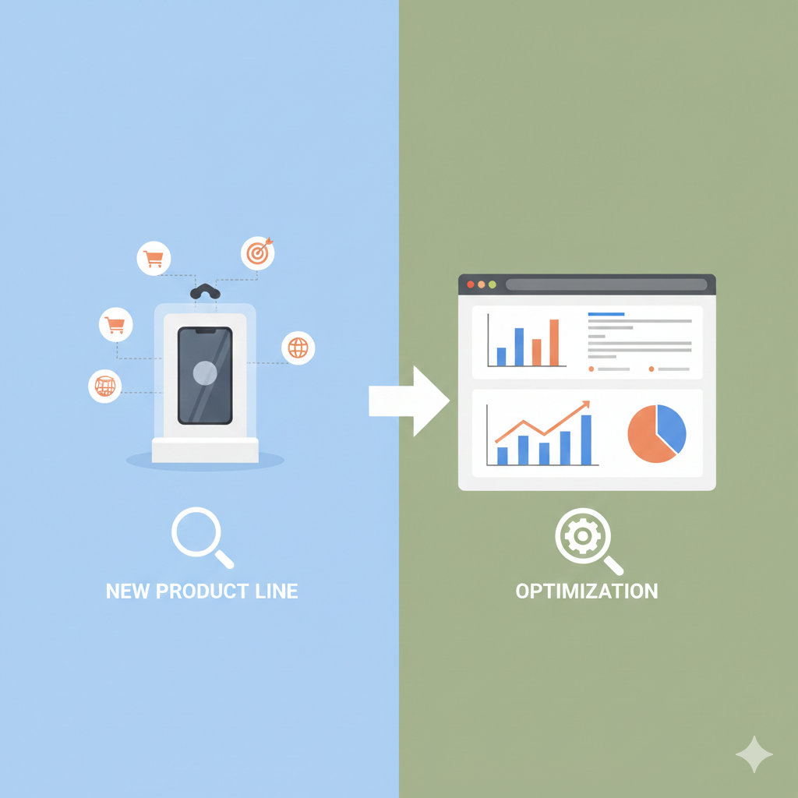

About Me
I am a results-driven AI/ML Engineer and Data Scientist bridging the gap between deep academic research and scalable industry solutions. I hold a Master's degree in Computer Engineering from Yıldız Technical University, where I am currently pursuing my PhD alongside professional certifications in Data Science and Analytics.
With over eight years of experience, I specialize in transforming complex data into measurable impact. My work spans designing deep learning pipelines for medical cancer detection, engineering environmental data solutions, and fine-tuning large language models for agentic AI systems. I am deeply passionate about collaborative innovation and leveraging cutting-edge technology to drive both business value and societal progress.
Experience
ML Engineer
Alignerr
ML Engineer
Outlier
Data Scientist
Turing
Artificial Intelligence Researcher
Health Institutes of Turkey
Data Analyst
CareerFoundry GmbH
- Analyzed large datasets to uncover trends and insights, enhancing decision-making processes
- Collaborated with stakeholders to understand data needs and deliver actionable recommendations
- Mentored students by providing technical support and personalized feedback on their projects
Senior Mentor — Data Science & ML
Udacity
- Evaluated AI project submissions with structured technical feedback
- Guided students in optimizing ML models using PyTorch, TensorFlow, and Keras
Software Engineer
FOPA Company Ltd.
- Guided teams in adopting best practices using GitHub and agile methodologies
- Collaborated on AI, Computer Vision, and NLP solutions using Python
Telecommunications Engineer
Cameroon Radio Television (CRTV)
- Configured satellite and microwave links for live television broadcasts
- Conducted maintenance on optic-fiber links and PSTN Network
Education
Computer Engineering
Yıldız Technical University
Istanbul, Türkiye
Sep 2025 – Aug 2029
Computer Engineering
Yıldız Technical University
Istanbul, Türkiye
Oct 2022 – Jun 2025
Computer Engineering
Telecommunications Engineering Specialization
University of Buea
Buea, Cameroon
Oct 2012 – Aug 2016
Projects
Neural Probability Models as Arithmetic Coding Engines
Stroke Detection in Brain CT Scans

Recipe Website Traffic Prediction

Cyclistic Bike-Share Analysis

Climate Change and Impacts in Africa

CIFAR-10 Image Classifier

Optimizing Sales Strategy for New Product Line
Skills
Data Science
Programming
Deep Learning & AI
Agentic AI
Analytics & Tools
Publications
Clinically Significant Prostate Cancer Detection and Diagnosis in Bi-Parametric MRI with Deep Learning Models
9th International Conference on Computer Science and Engineering (UBMK) — IEEE, October 2024
View PaperPer-Breast Cancer Classification using Transfer Learning with Vision Mamba
3rd International Conference on Emerging Trends and Applications in Artificial Intelligence (ICETAI) — Springer, May 2026
View PaperCertifications
Contact
I'm always open to discussing new opportunities, interesting projects, or just connecting. Feel free to reach out!